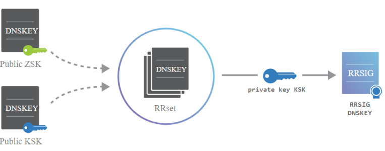

Key-Signing Keys (KSK)
We need a way to validate the DNSKEY ZSK record(that contain the public key). To do that is used another key pair:
key-signing key (KSK)
dig -t DNSKEY +dnssec +multiline @8.8.8.8 <domain>
The
RRSIG DNSKEY refers to both the DNSKEY
The fields that
RRSIG DNSKEY contains are:
▪
DNSKEY: Type covered, all the the resource records of this type are signed in this single RRSIG
▪
13: Algorithm used to sign
▪
2: number of labels in the owner name, meaning number of labels in dnstests.ovh, label is each non wildcard part, so here it is 2 (dnstests and ovh).
▪
3600: Original TTL
▪
20201216125646: Signature expiration date
▪
20201116125646: Signature inception date
▪
2371: KeyTag, refer to the keypair used, in this case the private key of the
KSK ▪
cloudflare.com.: Signer’s name
▪
r8W0+3HPFy...: The Signature
When we request the
DNSKEY Public ZSK the files that we have to receive to validate it are:
•
DNSKEY Public KSK• RRset DNSKEY
• the correspondent
RRSIG DNSKEY